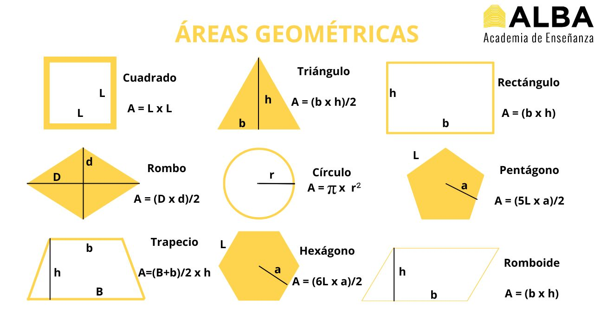
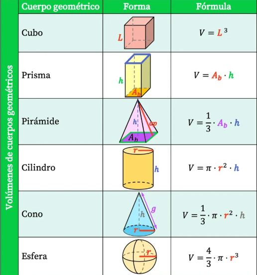
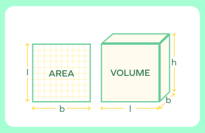
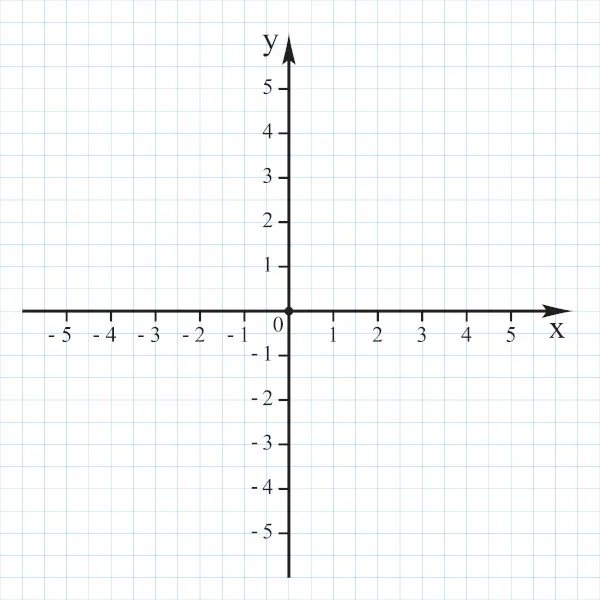

¿Qué es el Área?
El área es el cómo medimos lo de "adentro" de una figura plana o en 2 dimensiones. Imagina que quieres pintar una pared pues la cantidad de pintura que necesitas depende del área de esa pared. A continuación verás una imagen con la mayoria de fórmulas para sacar sus respectivas áreas:

Algo que también puede llamar la atención es que en algunas figuras tenemos una "B" mayúscula y otra "b" minúscula o incluso la letra "D" con la misma sitación pero ¿Qué significa? usualmente cuando se utiliza la letra mayúscula es por qué estamos hablando del más grande, por ejemplo en el caso del rombo la "D" significa diagonal mayor y la "d" diagonal menor.
El área de el circulo
Como al hacer girar nuestra figura siempre se van a formar círculos tenemos que saber medir un círculo. Pies simplemente un número mágico que nos dice cuántas veces cabe el diámetro (la línea que cruza el círculo por la mitad) en su borde exterior. Y el radio r es la distancia desde el centro hasta la orilla (como las manecillas de un reloj). Multiplicar pi por el radio al cuadrado nos dice exactamente cuánta "masa" esa parte plana.
Integrales
Aunque hablar de integrales suena a algo aterrador podemos simplificarlo en una "suma" Imagina un paquete de 500 hojas de papel para impresora. Una sola hoja casi no tiene grosor (es casi 2D). Pero si apilas (sumas) 500 hojas, d e repente tienes un bloque sólido y grueso (3D con volumen). Una integral es exactamente eso: una máquina matemática que suma millones de "hojas" o rebanadas invisibles para formar el volumen total
¿Qué es el volumen?
El volumen bebe mucho del tema del área pero por ahora solo entenderemos que si el área era para una superficie plana el volumen es para algo más complejo, por ejemplo una piscina. Para poder saber exactamente cuánta agua se necesita para poder llenar un recipiente en este caso la piscina le sacamos su volumen, las fórmulas para hacerlo se encuentran en la siguiente imagen:

También es importante recordar que los numeros arriba cómo "2" o "3" es una forma de representar las veces que deben multiplicarse a si mismos y por si aún hay duda también se mostrará una imagen
con las diferencias:

¿Qué es un plano cartesiano?
El plano cartesiano suena complejo, pero puedes verlo solo como un mapa de calles.
Imagina una ciudad donde hay calles que van de izquierda a derecha (Eje X) y
avenidas que van de abajo hacia arriba (Eje Y). Si te digo "camina tres cuadras a la derecha y dos hacia arriba",
llegas a un punto exacto. En los sólidos de revolución, usamos este mapa para dibujar la "silueta"antes de hacerla girar.
Es importante agregar también que para este concepto los números que se encuentren a la derecha y arriba del 0 son positivos, mientras que
los que se encuentren a la izquierda y por debajo son negativos. La imagen siguiente es un plano cartesiano:
